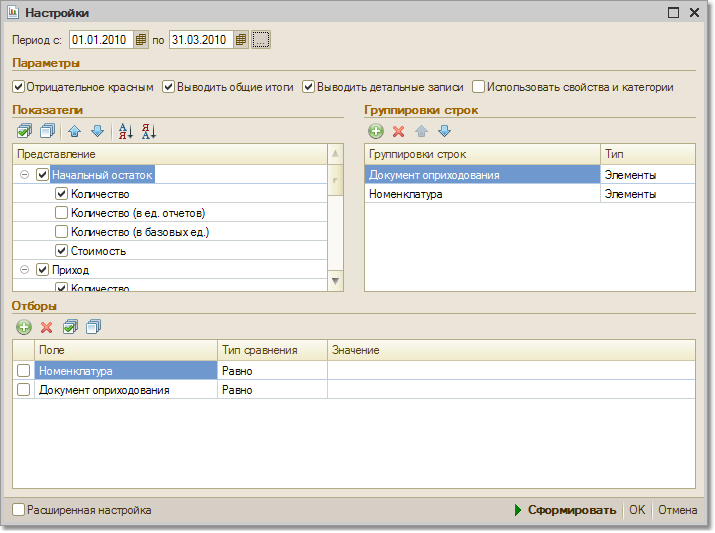

Меню Отчеты > Складской учет > Ведомость по партиям переданных товаров
Отчет показывает информацию о партиях товаров, переданных на реализацию комиссионерам.
Отчет может быть построен в разрезе документов поставки и документов передачи товаров на реализацию. С помощью этого отчета можно, например, узнать каким комиссионерам отдавались товары конкретного поставщика по конкретному документу поставки.
В отчете выводятся количественные показатели (в базовых единицах, единицах хранения остатков и единицах для отчетов), а также себестоимость переданных на реализацию товаров.
